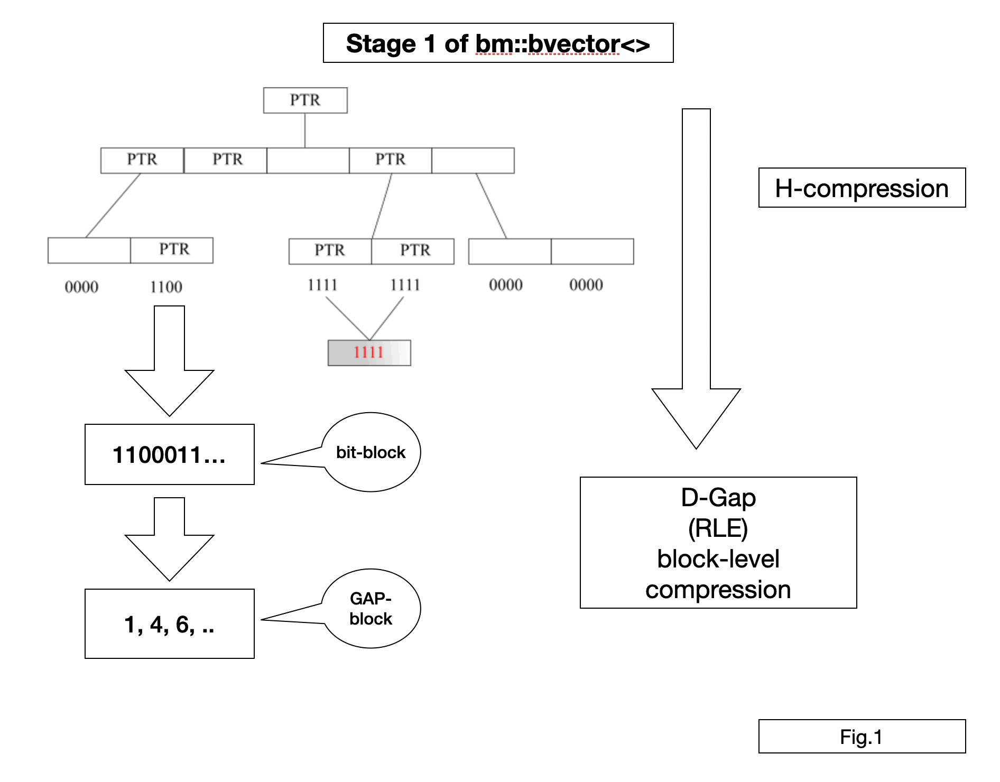
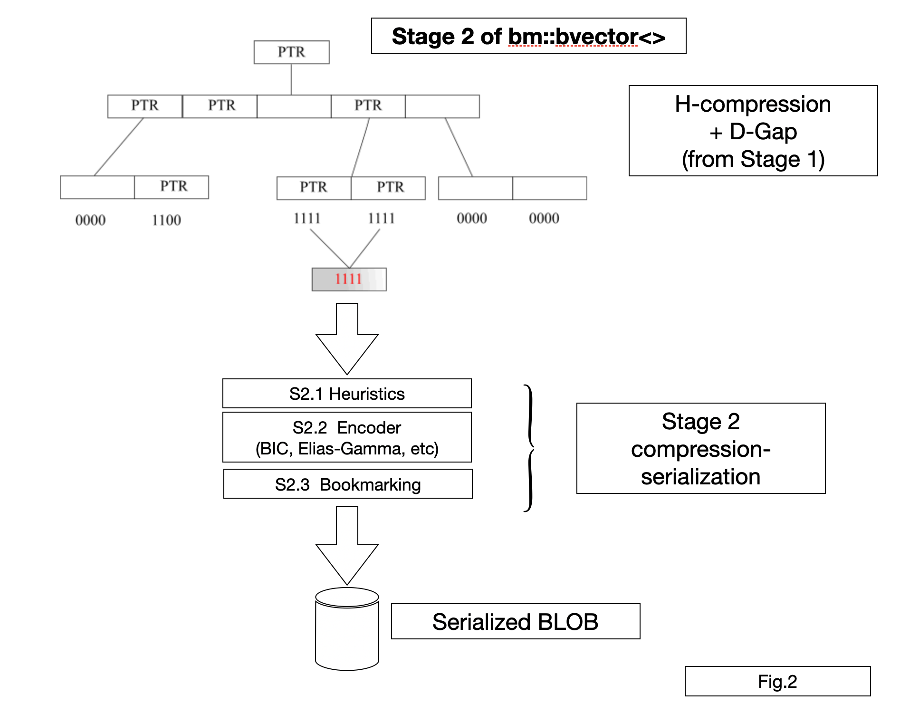
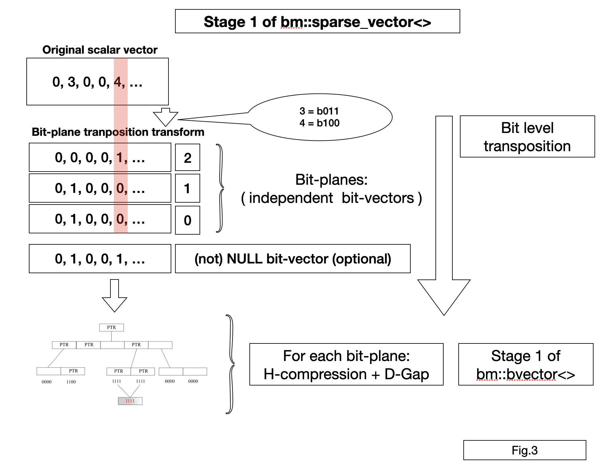
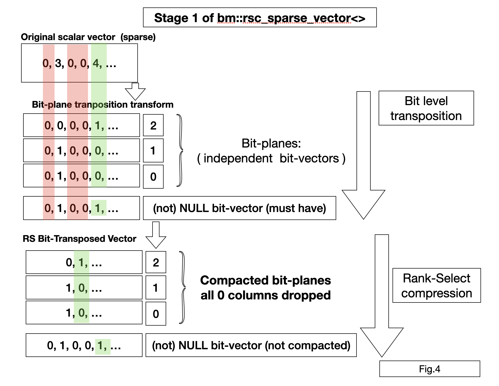
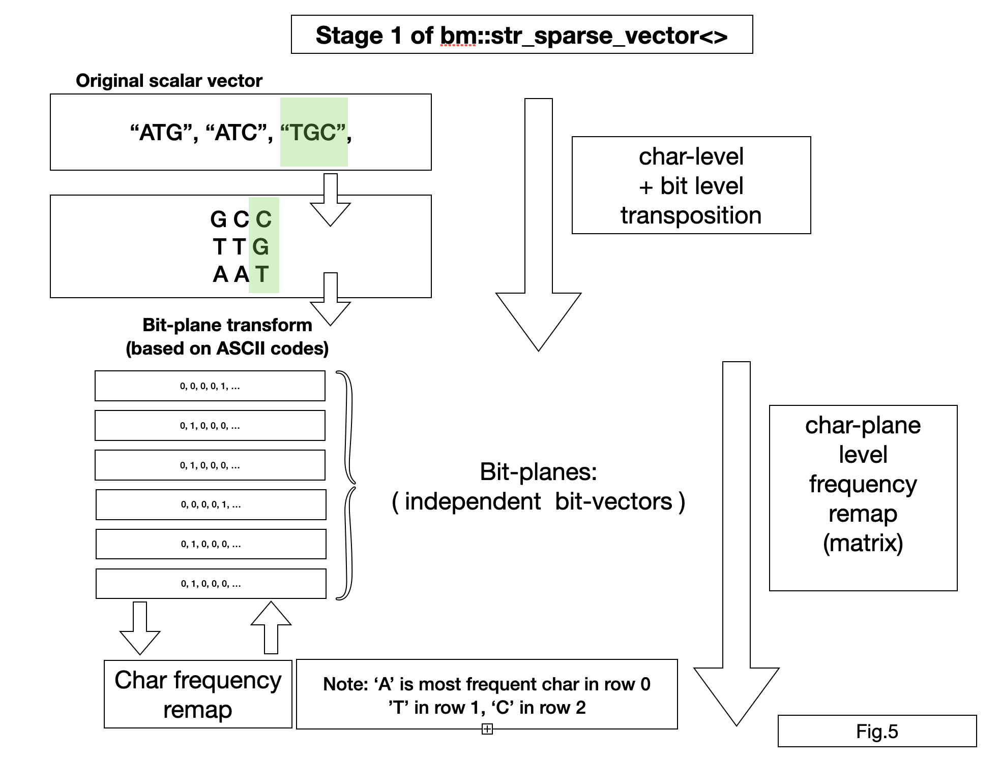
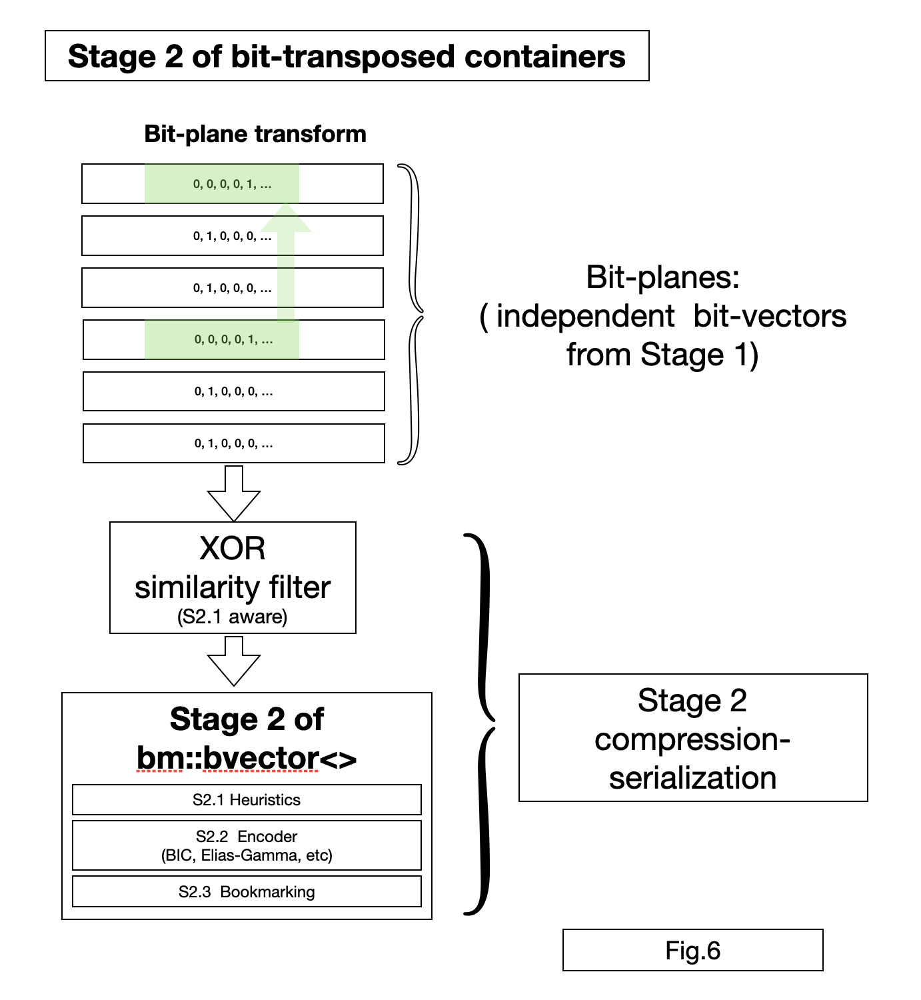

BitMagic Library: Overview of Compression Algorithms
Anatoliy Kuznetsov, Oct.2020
Introduction
BitMagic library implements a pipeline of compression algorithms for succinct vectors (dense or sparse). In its core it is based on bit-vectors and logical operations and similarity measures. In this topic we discuss an overview of algorithms and relationships between succinct and compressive methods in the compression pipeline.
Bit-vectors are widely used is scientific computing and artificial intelligence. Binary fingerprints, clustering, classification based systems need efficient, parallel set operations.
Big Picture
The backbone of BitMagic library is its implementation of bit-vector
(bm::bvector<>). The implementation is a Swiss knife
API which provides variety of functions to set and retrieve bits as
inverted integer lists, run Algebra of Sets operations,
high-performance Rank-Select
(accelerated Rank-Select index), bit shifts, fast logical scans, similarity measures and distances.
All this functionalities define building blocks for data science and
applied for compression or containers
(BitMagic implements STL-like container classes)
bm::bvector<> and all other containers use a
concept of two stage operation:
- Succinct in memory. Succinct is NOT a compression. Succinct data structures use compressive techniques, to minimize memory footprint but provide easy access to reading, modifications (some limitations here) and search functions.The trade-off here leans towards operations (like search) rather than compression, but operations are performed in succinct form, which saves both memory and RAM-CPU bandwidth at the expense of some CPU (ALU) utilization, which is usually a good trade-off.
-
Compressed - serialized BLOB. When saved to disk succinct data structures use deep
compression algorithms. The focus here is not fast operation necessarily but fast
decompression (this is typical for analytics and IR workloads).
One of the design principles here is provide APIs to easily
extract portions (ranges) of data vectors from the serialized BLOBs keeping technical details of windows of compression,
transformations kept under the hood.
The use case example: have big data frame, it does not fit in memory, your design choice is naturally to use database system (SQL or non-SQL).
Use of a database will solve the problem, but there is an alternative you can have data model in memory in compressed form, and decode parts of it to the stage 1 (succinct) and compute faster than if it is a database. We are extending the amount of operational RAM by using compression techniques right in our application at the level of data structures. Staying in-memory is important for variety of analytical workloads, visualization and latency sensitive services.
Compressive techniques for bm::bvector<>
 compression" />
Stage 1
H-compression
bm::bvector<> organizes data in a fixed depth tree of blocks. Blocks are fixed size of 64Kilo-bits (16-bit address internal space). At first data blocks are true bit-blocks. This is a basically hierarchical compression techniques used in many sparse structures, hash maps, etc. The goal here is allow sparse cases when data is filled in the upper spectrum of addresses or forms significant (more than 64K gaps of 0s or 1s). BitMagic handles both sparse (lots of 0s) and dense (lots of 1s cases). In many IR schemes dense cases are simply ignored as noise (stop lists) but this limits applicability for compression of scientific data models where dense is meaningful and must be preserved.
D-GAP (delta-gap) compression
Our next step (succinct) is to analyze bit-blocks and make
decision on which blocks exhibit clear patterns of 0000s and 1s and
should be compressed as a list of integers, which is a form or RLE
(run-length encoding). D-GAP variant of RLE keeps data as a list of
monotonically growing integers from 0 to 65535 (16-bit unsigned int)
describing every position in bit block where run pattern changes
(from 0 to 1 or from 1 to 0). Think of it as a binary signal,
impulse code modulation or the like.
Properties of D-GAP:
- Pseudo-random access. The value of any bit can be found using O(logN) binary search. BitMagic often uses vectorized hybrid search which is formally still logarithmic, but faster (wonders of computer science vs practical engineering). Since N is capped by the maximum of (65535) we call is "pseudo random access".
- All logical (set theoretical operations) are possible and implemented (OR, AND, XOR, NOT, AND-NOT, etc). DGAP can be even faster than on bit-blocks, it depends on particular distributions of bits.
- Allows modifications via insertion sort O(N^2) worst case. In practice inserytion happens within the boundaries of L1 CPU cache and are fast. Something worth mentioning here is that BitMagic uses memory reservations to let insertion sort do its job without frequent re-allocations (heap access kills performance).
Stage 2
 compression" />
Stage 2 is serialization with compression performed by bm::serializer<> class.
S2.1 Heuristics
The goal for the heuristics is to balance desired compression level and find possible best representations. It works on the per-block level, sometimes escalates to super-blocks. Representations to name a few: lists of integers representing 1s, list of GAPs, h-compressed blocks, list of integers representing 0s or uncompressed bit-blocks.S2.2 Encoder
Encoder uses either Elias-Gamma codes or Binary Interpolative Coding Centered Minimal (BIC-CM) to compress. BIC-CM is better by a large margin, Elias-Gamma is still useful for encoding lists of unordered small integers or for cases when we need faster serialization.S2.3 Bookmarking
BitMagic allows fast decompression of ranges and gather decompression. If the use case needs this functionality you can instruct serializer to add bookmarks to facilitate fast range decode. Bookmarks obviously add a bit of overhead, but also make range decode significantly faster. Bookmarking is enabled with set_bookmarks() function, where you define how often to add bookmarks (in number of blocks). Lower the number more precise and faster the decode would be (somewhat inflating the BLOB size). You have to experiment to find the desired bookmark setting, usually it is between 16 and 256. Bookmarks are NOT turned ON by default but you still can still use range gather deserialization - it will work with a penalty of doing some extra decompressions.Bit-plane transposed vectors
BitMagic implements succinct vectors for integers and strings based on bitwise transposition, also known as bit-plane compression (BPC) or bit-slicing.
Bit-plane transformation is an equivalent data representation where each bit-wise position (bit 0, 1, 2, 3 …) are extricated (sliced) and kept as independent bit-vectors. This transformation is lossless and reversible.
Integer and string succinct vectors have great utility in data science models in the next areas:
- IR
- signal / graph / time series compression
- bio-informatics (alignments, k-mers, DNA/protein sequences, reads)
- knowledge graphs and NLP models
BitMagic is a bit-vector library in its core, bit-plane compression is a natural fit here. Unlike some other compression systems BitMagic takes bit-transposition transform as succinct method, not as a pure compression. All containers in BitMagic remain in bit-transposed form (as a row-major bit-matrix or collection of bit-vectors) and provide R/W access to elements restoring it on the fly. The reason for that is not just saved memory but also ability to do fast search in sorted and unsorted arrays in memory compact, bit-transposed from (without reverse transformation) using vectorized set theoretical operations.
In many cases bit-transposed vectors are both memory compact and fast to search. Search is important for BitMagic as an IR library.
BitMagic supports 3 basic types of bit-transposed vectors:
-
bm::sparse_vector<>- bit-transposed succinct container for scalar integer arrays -
bm::rsc_sparse_vector<>- bit-transposed succinct container for scalar integer arrays compressing with Rank-Select operation -
bm::str_sparse_vector<>- bit-transposed succinct container for strings (fixed max size), used for scientific and NLP dictionaries, dictionary compression, bio-informatics data models (such as k-mers, sequence reads, genome variation data, etc).
All vectors support a notion of NULL value (unassigned vector element) coming from the RDBMS world. It is implemented as an additional NULL plane (presence-absence bit-vector). BitMagic can be used for in-memory columnar databases.
bm::rsc_sparse_vector<>
RSC vector uses additional Rank-Select compression on top of bit-planes. Fig 4.
Rank-Select compression uses the idea of systematically dropping the
unassigned NULL columns of the transposed matrix. This transform uses NULL vector and an
additional Rank-Select index to recalculate logical (external) indexes into internal
(succinct matrix column numbers).
RSC vector is naturally slower than bm::sparse_vector<> for
random element access, but more compact.
RSC vector can be modified later, adding elements is relatively fast, but setting new values in the middle require bit-shifts in all active bit-planes which can be computationally hard problem. BitMagic uses SIMD to accelerate this, but it is still a computationally hard problem magic can't solve that.
bm::str_sparse_vector<>

Bit-transposed vector for strings. To better understand this compression scheme
first transpose strings into a text matrix (getting a matrix to string position, than apply
bit-transposition to every character vector (similar to how bm::sparse_vector<>
does it for integers).
This vector works well for the next major cases:
- All strings in the vector have positional locality like technical or scientific identifiers. Being designed to have meaningful system of prefixes, suffices, etc. Examples: dictionary of stars and galaxies, list of known mutations or structural variations, nomenclature of chemical compounds, etc
- Strings does not have positional locality, but use limited alphabet (compared to full 256 ASCII list). Example: DNA (or protein) sequence k-mers.
- Sorted dictionaries. Sorting enforces order and positional locality, so lower parts of strings may become subject of RLE compression (on the bit-level).
bm::str_sparse_vector<> implements an additional transform:
character remapping. Character codes in all planes are analyzed for occurrence
frequencies per plane to assign lowest codeword to most frequent characters.
Similar codeword assignment is used in Huffman coding.
BitMagic applies as a succinct approach together with bit-transposed planes.
Remapping is an optional step, it limits the ability to modify the vector.
Remapping usually improves the internal structure of bit-vectors (for faster search),
reducing number of active bit-planes (internal enthropy),
but it may not have a necessarily positive effect on Stage 2 compression,
because of the overhead to store the remap matrix. It is advised to experiment with
the dataset to determine if remap step is necessary.
Stage 2 (compression) of bit-transposed containers
All bit-transposed containers based on bit-plane transform share the same serialization-compression engine.
Each bit-plane vector is compressed using bit-vector serializer.
BitMagic implements a XOR filter, an optional compressive transform based on Hamming distance. XOR filter can be applied for an individual vector or a group of vectors (data frame).
XOR filer uses properties of XOR codes and similarity-dissimilarity metrics (Hamming, GAP complement, NXOR) to find ways to express bit-blocks via XOR operation with another block and reduce entropy. XOR compression is a natural fit for bit-plane transform, because it exposes internal correlations in the data vectors, specific to some scientific data sets (example: sequence alignments).
BitMagic XOR compression is aware of S2.1 Heuristics used for bit-vector compression, and capable of improving compression rate or speed (or even both) of Stage 2 compression.
Bit-vector bookmarking is applicable, BitMagic adds bookmarks adaptively to each bit-plane. Bookmark is set every N 64K (size of bit-block in bits) vector elements. For example bookmark at every 32 blocks means 2097152 vector elements, but you can deserialize smaller or larger ranges, the library will adapt.
Conclusion
- BitMagic implements a set of compressive memory techniques suitable for Data Science or limited memory situations (Edge computing)
- Containers use a set of pipelined compressive techniques, systematically trading high performance vectorized CPU resources for bandwidth (memory, network, disk).
- BitMagic compression schemes allow selective data extraction with minimal penalties, can work as a building block for deep compressive models
- Choice of data parallel schemes and algorithms facilitates highly parallel comuting with SIMD, threads and potentially GP/GPU